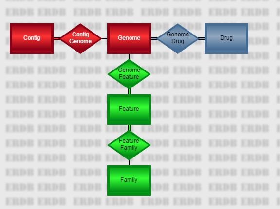

In this document, we observe the following conventions.
Text that you enter or type is shown in a white-background box.
This is input.
Output is shown in a yellow-background box. In general, you will only see the top portion of the output, since the whole thing could be quite large.
This is the top portion of the output.
Output is usually tab-delimited, and you will see columns separated by multiple spaces that don't always line up.
If it is necessary to show multiple excerpts of a single large output stream, the missing parts will be shown with a gray bar.
This is the top part.
This is somewhere in the middle.
The main PATRIC database is organized as a series of large, heavily-indexed relational tables. From the perspective of the CLI, there are five main tables representing objects of interest, connected by four relationships.
The five entities are as follows.
genome.
Thus, the genome_name will be in a column named genome.genome_name.
contig. Thus, the length will be in a column named contig.length.drug. Thus, the molecular_formula will be in a column named
drug.molecular_formula.PATRIC.269798.23.NC_008255.CDS.22581.24344.fwd). The patric_id value is
shorter and more consistent (fig|269798.23.peg.22). Fields from the Feature table appear
in the output with a heading prefix of feature. Thus, the location will be in a column named
feature.location.family. Thus, the product will be in a column named
family.product.The PATRIC CLI operates on tab-delimited files. That is, each record is divided into fields or columns separated by tab characters. The first record in each file contains the name of each column. Typically, a column name consists of a record name, a dot, and a field name. For example, the following file fragment contains a column from the genome table followed by two columns from the feature table.
genome.genome_id feature.patric_id feature.product 670.470 fig|670.470.repeat.1 repeat region 670.470 fig|670.470.repeat.2 repeat region 670.470 fig|670.470.repeat.3 repeat region 670.470 fig|670.470.rna.1 tRNA-Ala 670.470 fig|670.470.rna.2 tRNA-Ile 670.470 fig|670.470.repeat.4 repeat region 670.470 fig|670.470.rna.3 16S ribosomal RNA 670.470 fig|670.470.repeat.5 repeat region 670.470 fig|670.470.rna.4 tRNA-Val 670.470 fig|670.470.rna.5 tRNA-Ala 670.470 fig|670.470.repeat.6 repeat region
The scripts are designed so they can be chained together in pipelines. For example, the above file was generated by the pipeline
p3-all-genomes --eq "genome_name,Vibrio parahaemolyticus" | p3-get-genome-features --attr patric_id --attr product
In this pipeline, the --eq command-line option was used to filter a query, while the
--attr option was used to specify the output columns and the order in which they appear. These
options are available on all of the database scripts.
By default, the last column in the input file is used as the key field for the get-type scripts. You can modify this
behavior using the --col command-line option. The special value 0 denotes the last column, but
you can also use a 1-based column number (1 for the first, 2 for the second) or a column name.
If the field-name portion of the column name is unique, you can leave off the table-name portion.
So, if you want to get location information from the features output by the pipeline above (identified in column
feature.patric_id, which is the second one), you could use any of the three following commands
p3-get-feature-data --col=feature.patric_id --attr sequence_id --attr location <input.tbl
p3-get-feature-data --col=2 --attr sequence_id --attr location <input.tbl
p3-get-feature-data --col=patric_id --attr sequence_id --attr location <input.tbl
where input.tbl is the above output file.
The special script p3-extract allows you to select columns from a file and even change the order. Thus, the following pipeline removes the genome ID from our file and puts the feature ID at the end before asking p3-get-feature-data for the location information.
p3-extract feature.product feature.patric_id <input.tbl | p3-get-feature-data --attr sequence_id --attr location
The same flexibility provided for arguments of the --col option is available anywhere you specify
column names, including the parameters of p3-extract. So, the following invocation is equivalent to the above.
p3-extract product 2 <input.tbl | p3-get-feature-data --attr sequence_id --attr location
Because of the presence of the headings, many standard file-manipulation commands won't work the way you expect. We provide p3 scripts for several of the most common needs.
The p3-echo command is your most important tool for creating small files that feed into pipes.
The --title command-line option (abbreviated -t) allows you to specify the title
for the column you are creating. Each positional parameter forms a single record with a single column.
p3-echo -t genome_id 1313.7001 1313.7002 1313.7016
genome_id 1313.7001 1313.7002 1313.7016
You can create a multi-column file by specifying multiple titles. There will be one output column for each title specified. In the example below, there are three titles, so the output table is three columns. Every triple of parameters produces a record.
p3-echo -t genome_id -t sequences -t gc_content 1313.7001 52 39.64 1313.7002 45 39.63 1313.7016 58 39.77
genome_id sequences gc_content 1313.7001 52 39.64 1313.7002 45 39.63 1313.7016 58 39.77
If a field contains special characters such as spaces or pipe symbols, use double quotes to insure the characters are interpreted correctly.
p3-echo -t genome_id -t patric_id -t product 1313.7001 "fig|1313.7001.peg.1362" "hypothetical protein"
genome_id patric_id product 1313.7001 fig|1313.7001.peg.1362 hypothetical protein
If you leave off the title parameter, the default title id is used. This is a handy shortcut when
you're in a hurry.
p3-echo 1313.7001. 1313.7016
id 1313.7001 1313.7016
Of course, you can only do that for a single-column output.
In this section we briefly discuss the main database scripts.
p3-all-genomes --eq genome_name,Streptomyces
genome.genome_id 284037.4 67257.17 68042.5 68042.6 1395572.3 68570.5 1160718.3 749414.3 66876.3 249567.6would list all genomes in the genus Streptomyces. (That is, all genomes whose names start with that word.) The
--eq
parameter introduces an equality constraint. In PATRIC, string searches perform a word-based substring match, which allows us to easily do
queries of this type. The various database commands all support the --eq option. In addition, you can specify
output fields using the --attr option. Thus,
p3-all-genomes --eq genome_name,Streptomyces --attr genome_id --attr genome_namewould output both the ID and name of each genome found, as shown below.
genome.genome_id genome.genome_name 284037.4 Streptomyces sporocinereus strain OsiSh-2 67257.17 Streptomyces albus subsp. albus strain NRRL F-4371 68042.5 Streptomyces hygroscopicus subsp. hygroscopicus strain NBRC 16556 68042.6 Streptomyces hygroscopicus subsp. hygroscopicus strain NBRC 13472 1395572.3 Streptomyces albulus PD-1 68570.5 Streptomyces albulus strain NK660 1160718.3 Streptomyces auratus AGR0001 749414.3 Streptomyces bingchenggensis BCW-1 66876.3 Streptomyces chattanoogensis strain NRRL ISP-5002 249567.6 Streptomyces decoyicus strain NRRL 2666
To get a complete list of the available fields, use the --fields option. This option is available for all the
database scripts described in this section.
p3-all-genomes --fields
p3-all-genomes --eq genome_name,Streptomyces | p3-get-genome-data --attr genome_name --attr contigs --attr genome_length
genome.genome_id genome.genome_name genome.contigs genome.genome_length 284037.4 Streptomyces sporocinereus strain OsiSh-2 125 10242506 67257.17 Streptomyces albus subsp. albus strain NRRL F-4371 307 9246299 68042.5 Streptomyces hygroscopicus subsp. hygroscopicus strain NBRC 16556 133 10141569 68042.6 Streptomyces hygroscopicus subsp. hygroscopicus strain NBRC 13472 680 9464604 1395572.3 Streptomyces albulus PD-1 425 9340057 68570.5 Streptomyces albulus strain NK660 9372401 1160718.3 Streptomyces auratus AGR0001 213 7825489 749414.3 Streptomyces bingchenggensis BCW-1 0 11936683 66876.3 Streptomyces chattanoogensis strain NRRL ISP-5002 217 9129105In actual fact, the use of p3-get-genome-data in the above pipeline is redundant, since p3-all-genomes supports the same command-line options. In practice, you will use p3-get-genome-data to process genome ID files created on a separate occasion or via other scripts that don't have the full power of p3-all-genomes. If you don't specify any
--attr values, you get the same output fields as found on the PATRIC genome
list tab.
p3-all-genomes --eq genome_name,Streptomyces | p3-get-genome-data
genome.genome_id genome.genome_name genome.genome_id genome.genome_status genome.sequences genome.patric_cds genome.isolation_country genome.host_name genome.disease genome.collection_year genome.completion_date 284037.4 Streptomyces sporocinereus strain OsiSh-2 284037.4 WGS 125 9060 China Rice 2012 2016-08-16T00:00:00Z 67257.17 Streptomyces albus subsp. albus strain NRRL F-4371 67257.17 WGS 307 8633 2016-01-26T00:00:00Z 68042.5 Streptomyces hygroscopicus subsp. hygroscopicus strain NBRC 16556 68042.5 WGS 133 8955 2016-02-05T00:00:00Z 68042.6 Streptomyces hygroscopicus subsp. hygroscopicus strain NBRC 13472 68042.6 WGS 680 8767 2016-02-05T00:00:00Z 1395572.3 Streptomyces albulus PD-1 1395572.3 WGS 482 8332 China 2013-12-05T00:00:00Z 68570.5 Streptomyces albulus strain NK660 68570.5 Complete 2 8793 China 2014-06-18T00:00:00Z 1160718.3 Streptomyces auratus AGR0001 1160718.3 WGS 238 6866 China 2012-07-23T00:00:00Z 749414.3 Streptomyces bingchenggensis BCW-1 749414.3 Complete 1 10313 China 2010-05-28T00:00:00Z 66876.3 Streptomyces chattanoogensis strain NRRL ISP-5002 66876.3 WGS 217 8838 United States 2015-09-18T00:00:00Z 249567.6 Streptomyces decoyicus strain NRRL 2666 249567.6 WGS 304 8231 United States 2015-08-19T00:00:00Z 1907.4 Streptomyces glaucescens GLA.O 1907.4 Complete 2 6719 India 2014-10-01T00:00:00Z 1172567.3 Streptomyces globisporus C-1027 1172567.3 WGS 278 6980 China 2012-05-04T00:00:00ZThis is typical of the
p3-get scripts: the default attributes match what you see on the web site as closely
as possible.
p3-all-genomes --eq genus,Cytophaga | p3-get-genome-features --attr patric_id --attr product
genome.genome_id feature.patric_id feature.product 269798.23 fig|269798.23.peg.1 hypothetical protein 269798.23 fig|269798.23.peg.2 Capsular polysaccharide synthesis enzyme Cap8C; Manganese-dependent protein-tyrosine phosphatase (EC 3.1.3.48) 269798.23 fig|269798.23.peg.3 Dihydroflavonol-4-reductase (EC 1.1.1.219) 269798.23 fig|269798.23.peg.4 TPR domain protein 269798.23 fig|269798.23.peg.5 Phosphosulfolactate synthase (EC 4.4.1.19) 269798.23 fig|269798.23.peg.6 DedA protein 269798.23 fig|269798.23.peg.7 Shikimate 5-dehydrogenase I alpha (EC 1.1.1.25) 269798.23 fig|269798.23.peg.8 hypothetical protein 269798.23 fig|269798.23.peg.9 Excinuclease ABC subunit B 269798.23 fig|269798.23.peg.10 DNA polymerase III epsilon subunit 269798.23 fig|269798.23.peg.11 hypothetical protein 269798.23 fig|269798.23.peg.12 putative fatty acid hydroxylaseYou can use the
--fields option to list all the fields available in a feature record. In addition, you have
access to the usual filtering parameters-- --eq as well as --lt, --gt, --le,
--ge, and --ne. So, for example, the following command would restrict the features to CDS features
of at least 500 base pairs.
p3-all-genomes --eq genus,Cytophaga | p3-get-genome-features --eq feature_type,CDS --ge na_length,500 --attr patric_id --attr product
genome.genome_id feature.patric_id feature.product 269798.23 fig|269798.23.peg.2 Capsular polysaccharide synthesis enzyme Cap8C; Manganese-dependent protein-tyrosine phosphatase (EC 3.1.3.48) 269798.23 fig|269798.23.peg.3 Dihydroflavonol-4-reductase (EC 1.1.1.219) 269798.23 fig|269798.23.peg.4 TPR domain protein 269798.23 fig|269798.23.peg.5 Phosphosulfolactate synthase (EC 4.4.1.19) 269798.23 fig|269798.23.peg.6 DedA protein 269798.23 fig|269798.23.peg.7 Shikimate 5-dehydrogenase I alpha (EC 1.1.1.25) 269798.23 fig|269798.23.peg.8 hypothetical protein 269798.23 fig|269798.23.peg.9 Excinuclease ABC subunit B 269798.23 fig|269798.23.peg.10 DNA polymerase III epsilon subunit 269798.23 fig|269798.23.peg.12 putative fatty acid hydroxylase 269798.23 fig|269798.23.peg.13 Glycosyl transferase
p3-echo -t genome_id 28903.66 | p3-get-genome-contigs --attr sequence_id --attr sequenceThe output will have three columns, including the genome ID, the ID of the contig, and the actual DNA sequence (which can be quite long). Again, use the
--fields option to see which fields are available for output and filtering in the contig records.
p3-all-genomes --eq genome_name,Acinetobacter | p3-get-genome-drugs
genome.genome_id genome_drug.genome_id genome_drug.antibiotic genome_drug.resistant_phenotype 1409922.5 1409922.5 amikacin Resistant 1409922.5 1409922.5 gentamicin Resistant 1409922.5 1409922.5 tobramycin Resistant 1409922.5 1409922.5 imipenem Resistant 1409922.5 1409922.5 ceftazidime Resistant 1409922.5 1409922.5 ceftriaxone Resistant 1409922.5 1409922.5 aztreonam Resistant 1409922.5 1409922.5 ciprofloxacin Resistant 1409922.5 1409922.5 levofloxacin Resistant 1409922.5 1409922.5 tetracycline Resistant 1409922.5 1409922.5 cefepime Intermediate 1409923.3 1409923.3 amikacin Resistant 1409923.3 1409923.3 gentamicin Resistant
--fields option to see a list of all the
fields you can select. The default is to simply list the antibiotic name, as shown below.
p3-all-drugs
drug.antibiotic_name amikacin amoxicillin amoxicillin/clavulanic acid ampicillin ampicillin/sulbactam azithromycin aztreonam bacitracin capreomycin cefaclor cefazolin
p3-all-drugs | p3-get-drug-genomes --attr genome_id --attr genome_name --resistant
drug.antibiotic_name genome_drug.genome_id genome_drug.genome_name amikacin 1304920.3 Klebsiella pneumoniae 361_1301 amikacin 1427177.3 Mycobacterium tuberculosis XTB13-081 amikacin 1427178.3 Mycobacterium tuberculosis XTB13-082 amikacin 1427180.3 Mycobacterium tuberculosis XTB13-084 amikacin 1427185.3 Mycobacterium tuberculosis XTB13-091 amikacin 1427191.3 Mycobacterium tuberculosis XTB13-097 amikacin 1427192.3 Mycobacterium tuberculosis XTB13-098 amikacin 1427193.3 Mycobacterium tuberculosis XTB13-100 amikacin 1427199.3 Mycobacterium tuberculosis XTB13-107 amikacin 1427200.3 Mycobacterium tuberculosis XTB13-108 amikacin 1427202.3 Mycobacterium tuberculosis XTB13-110 amikacin 1427204.3 Mycobacterium tuberculosis XTB13-112 amikacin 1427207.3 Mycobacterium tuberculosis XTB13-115Rather than typing
--eq resistant_phenotype,resistant, the p3-get-drug-genomes script provides the special
command-line options --resistant and --susceptible to filter for the appropriate resistance phenotypes
automatically.
local, global, and figfam. The --ftype parameter specifies the type of family
desired. So, for example, the following pipeline finds the global family for the feature fig|1105121.3.peg.460 and
then lists the ID and product of each family member.
p3-echo -t feature_id "fig|1105121.3.peg.460" | p3-get-feature-data --attr pgfam_id | p3-get-family-features --ftype=global --attr patric_id --attr productNote that the features found are listed in the column feature.patric_id, while the original feature is maintained in the first column feature_id.
feature_id feature.pgfam_id feature.patric_id feature.product fig|1105121.3.peg.460 PGF_00112374 fig|1313.8637.peg.2087 hypothetical protein fig|1105121.3.peg.460 PGF_00112374 fig|1313.8636.peg.1563 hypothetical protein fig|1105121.3.peg.460 PGF_00112374 fig|1313.8645.peg.110 hypothetical protein fig|1105121.3.peg.460 PGF_00112374 fig|1313.12423.peg.2037 hypothetical protein fig|1105121.3.peg.460 PGF_00112374 fig|1330044.3.peg.533 hypothetical protein fig|1105121.3.peg.460 PGF_00112374 fig|1313.5699.peg.1778 hypothetical protein fig|1105121.3.peg.460 PGF_00112374 fig|1313.5750.peg.307 hypothetical protein fig|1105121.3.peg.460 PGF_00112374 fig|1313.5754.peg.739 hypothetical protein fig|1105121.3.peg.460 PGF_00112374 fig|1313.5758.peg.1823 hypothetical protein fig|1105121.3.peg.460 PGF_00112374 fig|1313.5781.peg.1819 hypothetical protein fig|1105121.3.peg.460 PGF_00112374 fig|1313.5778.peg.686 hypothetical protein fig|1105121.3.peg.460 PGF_00112374 fig|1313.5729.peg.1554 hypothetical protein
--fields option to list
the fields you can use for filtering and display. The following pipeline lists the function (product) and protein sequence of each peg of less
than 300 base pairs in the genome 1105121.3.
p3-echo -t genome_id 1105121.3 | p3-get-genome-features --lt na_length,300 --eq feature_type,CDS --attr patric_id | p3-get-feature-data --attr product --attr aa_sequence
genome_id feature.patric_id feature.product feature.aa_sequence 1105121.3 fig|1105121.3.peg.1487 BOX elements MKIKEQTRKLAASCSKHCFEVVDKTDEVSYIYNPRRR 1105121.3 fig|1105121.3.peg.1508 hypothetical protein MISTTYRNHRKRFGLRMNLIAEKVSKTLDKTFDKDVREIPTSQFYQKFVDEMGRTYSGNLILQELITVNGAYKATYIGELSSN 1105121.3 fig|1105121.3.peg.1557 hypothetical protein MKREVISNGNDGPSQEILIFTKQIRHWILSDQVISGKRKLFFREDTPKEILDLYENIKSKLDFAYQEVYSNNGLKKYEK 1105121.3 fig|1105121.3.peg.1598 BOX elements MKIKEQTRKLAAGCSKHCFEVVDRTDEVSNLHTARRR 1105121.3 fig|1105121.3.peg.1776 hypothetical protein MVASASASSTSTQAQEQVDKSELRALSQELDQRLKALATVSDPKIDATKAVLLDAQKAPEDSALTE 1105121.3 fig|1105121.3.peg.10 hypothetical protein MENLLDVIEQFLGLSDEKLEELADKNQLLRLQEEKERKNA 1105121.3 fig|1105121.3.peg.94 BOX elements MKIKEQTRKLAAGCSKHCFEVVDKTDEVSYIYLRQGEADAV 1105121.3 fig|1105121.3.peg.220 Ribonucleotide reductase of class III (anaerobic), large subunit (EC 1.17.4.2) MVKRTCGYLGNPQARPMVNGRHKEIAARVKHMNGSTIKIAGHQVTN 1105121.3 fig|1105121.3.peg.228 LSU ribosomal protein L23p (L23Ae) MNLYDVIKKPVITESSMAQLEAGKYVFEVDTRAHKLLIKQAVEAAFEGVKVANVNTINVKPKAKRVGRYTGFTNKTKKAIITLTADSKAIELFAAEAE 1105121.3 fig|1105121.3.peg.230 SSU ribosomal protein S19p (S15e) MGRSLKKGPFVDEHLMKKVEAQANDEKKKVIKTWSRRSTIFPSFIGYTIAVYDGRKHVPVYIQEDMVGHKLGEFAPTRTYKGHAADDKKTRRKThe use of p3-get-feature-data here is redundant, since you could get the same result by placing the attribute requests directly on p3-get-genome-features.
p3-echo -t genome_id 1105121.3 | p3-get-genome-features --lt na_length,300 --eq feature_type,CDS --attr patric_id --attr product --attr aa_sequencep3-get-feature-data is provided for the situation where you are piping in the feature list from something external or precomputed.
Users of PATRIC have access to a wealth of public data that support interpretation of prokaryotic genomes. The PATRIC team actively integrates newly-sequenced genomes, data relating to antimicrobial resistance, expression data, pathway data and subsystem data into an integrated framework that can be queried using either the PATRIC UI or the CLI.
In the PATRIC UI, your workspace looks a lot like a standard file system, divided into folders full of data. In addition to files you upload, such as FASTA and FASTQ files, there will also be typed objects such as genomes, feature groups, and genome groups. The CLI allows you to move these typed objects between your workspace and your file system so you can manipulate them at will.
To access your workspace, you need a PATRIC account. If you do not have one already, go to https://user.patricbrc.org/register and register now.
Now that you have a working user name and password, you can use the p3-login script to
tell the CLI who you are. For example, if your name is rastuser25, you would type
p3-login rastuser25
The script asks you for your password and places a special file on your hard drive that can be used to get authorized access to your workspace data. To log out again, simply use
p3-login --logout
At any time, you can verify your login status using
p3-login --status
If you are logged out, it will respond
You are currently logged out of PATRIC.
If you are logged in, you will get something like
You are logged in as rastuser25@patricbrc.org.
Your workspace looks like a full-blown file system, but there are three special folders.
To create a genome group, you use p3-put-genome-group. Say, for example, you want to examine Streptococcus penumoniae genomes that are resistant to penicillin. The following query command will return this list of genomes (we will discuss all query commands in more details later).
p3-echo -t antibiotic penicillin | p3-get-drug-genomes --eq "genome_name,Streptococcus pneumoniae" --resistant --attr genome_id --attr genome_name >resist.tbl
This particular
command asks for data from the anti-microbial resistance table. Each record in this table posits a relationship
between a genome and an antibiotic drug. We are accessing the table from the direction of taking a drug and finding
resistant genomes. To do this, we need a file with a drug name in it. The p3-echo command creates this file:
the -t antibiotic parameter tells it we want a one-column file with a column header of antibiotic.
We put the single record penicillin in that column.
The antibiotic file is then piped into p3-get-drug-genomes. Its parameters do the following.
--eq "genome_name,Streptococcus pneumoniae"Streptococcus pneumoniae strain LMG2888)
will still match.--resistant--attr genome_id--attr genome_nameWhen the command completes, the file resist.tbl will contain around 114 lines beginning with the following.
antibiotic genome_drug.genome_id genome_drug.genome_name penicillin 1313.7006 Streptococcus pneumoniae P310010-154 penicillin 1313.7016 Streptococcus pneumoniae P310937-212 penicillin 1313.7018 Streptococcus pneumoniae P311313-217 penicillin 760749.3 Streptococcus pneumoniae GA05248 penicillin 760763.3 Streptococcus pneumoniae GA11304 penicillin 760765.3 Streptococcus pneumoniae GA11663 penicillin 760766.3 Streptococcus pneumoniae GA11856 penicillin 760769.3 Streptococcus pneumoniae GA13338 penicillin 760771.3 Streptococcus pneumoniae GA13455 penicillin 760776.3 Streptococcus pneumoniae GA14373 penicillin 760777.3 Streptococcus pneumoniae GA14688
Now we want to create a group for these genomes called resist_strep. We use the following command.
p3-put-genome-group --col=2 resist_strep <resist.tbl
The --col=2 tells the command that the genome IDs are in the second column. The genome group is simply
a set of genome IDs, so the other columns will be ignored by the command. You can read the group back at any time
using p3-get-genome-group.
p3-get-genome-group resist_strep
Will output
resist_strep.genome_id 1313.7006 1313.7016 1313.7018 760749.3 760763.3 760765.3 760766.3 760769.3 760771.3
and so on. Note that if you want to see the names as well, you can use the p3-get-genome-data command to add them
p3-get-genome-group resist_strep | p3-get-genome-data --attr genome_name
resist_strep.genome_id genome.genome_name 1313.7006 Streptococcus pneumoniae P310010-154 1313.7016 Streptococcus pneumoniae P310937-212 1313.7018 Streptococcus pneumoniae P311313-217 760749.3 Streptococcus pneumoniae GA05248 760763.3 Streptococcus pneumoniae GA11304 760765.3 Streptococcus pneumoniae GA11663 760766.3 Streptococcus pneumoniae GA11856 760769.3 Streptococcus pneumoniae GA13338 760771.3 Streptococcus pneumoniae GA13455 760776.3 Streptococcus pneumoniae GA14373 760777.3 Streptococcus pneumoniae GA14688
Next we will ask for the genomes that are susceptible to penicillin. We use the same command as before except we put
susceptible in place of resistant. We're going to pipe the results directly into
p3-put-genome-group to store them in our workspace.
p3-echo -t antibiotic penicillin | p3-get-drug-genomes --eq "genome_name,Streptococcus pneumoniae" --susceptible --attr genome_id --attr genome_name | p3-put-genome-group --col=2 weak_strep
Now when you ask for the group back, you would get something like the following.
p3-get-genome-group weak_strep
weak_strep.genome_id 1313.6939 1313.6941 1313.6942 1313.6944 1313.6947 1313.7001 1313.7002 1313.7007 1313.7009
We want to look at features in the resistant Streptococcus pneumoniae genomes that distinguish them from the susceptible ones. Then we will gather those features into a feature group and store them in our workspace so we can work with them later. We have the genomes we want stored in the genome groups weak_strep and resist_strep. The command that processes them is called p3-signature-families.
p3-signature families compares two genome groups-- group 1 contains genomes that are interesting for some reason, group 2 contains genomes that are not. We can pipe one of the two groups directly into the command, but the other needs to be in a file. We will start by creating a file called weak.tbl that contains the weak_strep genomes.
p3-get-genome-group weak_strep >weak.tbl
Now we pipe in resist_strep (the interesting set) and specify weak.tbl as the source of group 2.
p3-get-genome-group resist_strep | p3-signature-families --gs2=weak.tbl >families.tbl
The output contains protein families that are common in the interesting set (resistant to penicillin) but not in the other set. If a set file is not specified, it is taken from the standard input. In this case, that would be the interesting set, since there is no --gs1 parameter.
Our signature families analysis script has no output, because we redirected it to families.tbl. We can peek
at the results using the --all option of p3-extract.
p3-extract --all <families.tbl
counts_in_set1 counts_in_set2 family.family_id family.product 92 10 PGF_00112374 hypothetical protein 92 10 PGF_00303700 hypothetical protein 92 10 PGF_03497231 hypothetical protein 91 10 PGF_03497236 hypothetical protein
We found four protein families. The next step is to convert the families into feature IDs. The p3-get-family-features script performs that function. We will use the following command.
p3-get-family-features --gFile=resist.tbl --gCol=2 --ftype=global --col=family.family_id <families.tbl
The parameters work as follows.
family.family_id.The output looks something like this.
counts_in_set1 counts_in_set2 family.family_id family.product feature.patric_id feature.refseq_locus_tag feature.gene_id feature.plfam_id feature.pgfam_id feature.product 92 10 PGF_00112374 hypothetical protein fig|1105121.3.peg.460 SPAR163_0451 0 PLF_1301_00002060 PGF_00112374 hypothetical protein 92 10 PGF_00112374 hypothetical protein fig|1069626.3.peg.432 SPAR154_0430 0 PLF_1301_00002060 PGF_00112374 hypothetical protein 92 10 PGF_00112374 hypothetical protein fig|1313.6771.peg.1961 ERS013947_01920 PLF_1301_00002060 PGF_00112374 hypothetical protein 92 10 PGF_00112374 hypothetical protein fig|1313.5503.peg.1279 ERS013945_01218 PLF_1301_00002060 PGF_00112374 hypothetical protein 92 10 PGF_00112374 hypothetical protein fig|1313.5634.peg.1224 ERS013952_01170 PLF_1301_00002060 PGF_00112374 hypothetical protein 92 10 PGF_00112374 hypothetical protein fig|1069624.3.peg.437 SPAR151_0439 0 PLF_1301_00002060 PGF_00112374 hypothetical protein 92 10 PGF_00112374 hypothetical protein fig|1069628.3.peg.451 SPAR156_0440 0 PLF_1301_00002060 PGF_00112374 hypothetical protein 92 10 PGF_00112374 hypothetical protein fig|1313.5669.peg.1163 ERS013960_01123 PLF_1301_00002060 PGF_00112374 hypothetical protein 92 10 PGF_00112374 hypothetical protein fig|1313.6725.peg.2115 ERS013931_02059 PLF_1301_00002060 PGF_00112374 hypothetical protein 92 10 PGF_00112374 hypothetical protein fig|1313.5465.peg.1094 ERS013930_01056 PLF_1301_00002060 PGF_00112374 hypothetical protein 92 10 PGF_00112374 hypothetical protein fig|1313.5418.peg.2058 ERS013923_02003 PLF_1301_00002060 PGF_00112374 hypothetical protein 92 10 PGF_00112374 hypothetical protein fig|1313.5645.peg.1124 ERS013964_01084 PLF_1301_00002060 PGF_00112374 hypothetical protein
We didn't tell p3-get-family-features what attributes of the features to display, so it defaulted to the columns normally found on the PATRIC web page Features tab. We don't have time to examine these features in detail now, but we can put them in a feature group by piping them into p3-put-feature-group as follows.
p3-get-family-features --gFile=resist.tbl --gCol=1 --ftype=global --col=family.family_id <families.tbl | p3-put-feature-group --col=feature.patric_id resist_fids
In the p3-put-feature-group command, the --col=feature.patric_id parameter tells the command
that the feature IDs are in the column with that heading, and resist_fids is the group name. When you
decide to examine the features in greater detail, you can pull back the feature IDs using p3-get-feature-group.
p3-get-feature-group resist_fids
The output will look something like this.
resist_fids.patric_id fig|1105121.3.peg.460 fig|1069626.3.peg.432 fig|1313.6771.peg.1961 fig|1313.5503.peg.1279 fig|1313.5634.peg.1224 fig|1069624.3.peg.437 fig|1069628.3.peg.451 fig|1313.5669.peg.1163 fig|1313.6725.peg.2115
At any time, you can get a complete list of the groups in your workspace using the p3-list-genome-groups command or the p3-list-feature-groups command. So, if you have been following along the above examples and your workspace was empty before you began, you would see the following.
p3-list-genome-groups
resist_strep weak_strep
p3-list-feature-groups
resist_fids
Sometimes you want to store a genome on your local hard drive. PATRIC provides a special format for encapsulating all the data from a genome called the genome typed object or GTO. The p3-gto script allows you to download one or more PATRIC genomes in GTO format. The following command downloads two strep genomes -- 1313.7001 and 1313.7016-- in GTO format and stores them in the current directory.
p3-gto 1313.7001 1313.7016
The GTO files have the same name as the genome ID with a suffix of .gto. So, the above command creates 1313.7001.gto
and 1313.7016 in the current directory. If you execute this command and look at 1313.7001.gto, you will see something like
the following (with large portions in the middle removed).
{
"analysis_events" : [],
"scientific_name" : "Streptococcus pneumoniae P210774-233",
"source" : "PATRIC",
"source_id" : "1313.7001",
"id" : "1313.7001",
"taxonomy" : [
"cellular organisms",
"Bacteria",
"Terrabacteria group",
"Firmicutes",
"Bacilli",
"Lactobacillales",
"Streptococcaceae",
"Streptococcus",
"Streptococcus pneumoniae"
],
"contigs" : [
{
"genetic_code" : "11",
"dna" : "gaaaggacaaaatttgtcctttctcaagcttagctgacttcaacccactacagttgacaaagagcctgttttctcaataggattgtactcaggtgagtagggaggaagaggtaaaagtttatgcccaaactcttcacacaagagttctagcttacccattctatggaatcttgcattatccataataataaccgatggtgtggttaatgttggtaagagaaatttctgaaaccatacttcaaaaaagtcgctcgtcatcgtctcttcgtaagtcattggagcgattaattcaccatttgttagacctgcaaccaaagaaatcctctgatatcttcttccagatactttgcctcttcttaactgaccttttaatgagcgaccatattctcgataaaaataagtatcgaatcctgtttcgtcaatctaaacaggtgctaggtgctttaaactattaaaattcttaagaaataaggctacttatcgccctgaatatcaaaaaagaaaggacaaaatttgtcctttctcaagcttagctgacttcaacccactacagttgacaaagagcctgttttctcaataggattgtactcaggtgagtagggaggaagaggtaaaagtttatgcccaaactcttcacacaagagttctagcttacccattctatggaatcttgcattatccataataataaccgatggtgtggttaatgttggtaagagaaatttctgaaaccatacttcaaaaaagtcgctcgtcatcgtctcttcgtaagtcattggagcgattaattcaccatttgttagacctgcaaccaaagaaatcctctgatatcttcttccagatactttgcctcttcttaactgaccttttaatgagcgaccatattctcgataaaaataagtatcgaatcctgtttcgtcaatctaaacaggtgctaggtgctttaaactattaaaattcttaagaaataaggctactttttctgggtcttgttcatagtaggtgtggttctttttttcgagtgtagcccatagctttgagcgcatagtggatggtagttggatgacagccaaattcagaagctatttcagtcaaataagcgtct",
"id" : "1313.7001.con.0001"
},
{
"id" : "1313.7001.con.0002",
"genetic_code" : "11",
"dna" : "aaagaagctgttcgaaaagtaggcgatggttatgtctttgaggagaatggagtttctcgttatatcccagccaaggatctttcagcagaaacagcagcaggcattgatagcaaactggccaagcaggaaagtttatctcataagctaggagctaagaaaactgacctcccatctagtgatcgagaattttacaataaggcttatgacttactagcaagaattcaccaagatttacttgataataaaggtcgacaagttgattttgaggctttggataacctgttggaacgactcaaggatgtctcaagtgataaagtcaagttagtggatgatattcttgccttcttagctccgattcgtcatccagaacgtttaggaaaaccaaattcgcaaattacctacactgatgatgagattcaagtagccaagttggcaggcaagtacacaacagaagacggttatatctttgatcctcgtgatataaccagtgatgagggggatgcctatgtaactccacatatgacccatagccactggattaaaaaagatagtttgtctgaagctgagagagcggcagcccaggcttatgctaaagagaaaggtttgacccctccttcgacagaccatcaggatgcaggaaatactgaggcaaaaggagcagaagctatctacaaccgcgtgaaagcagctaagaaggtgccacttgatcgtatgccttacaatcttcaatatactgtagaagtcaaaaacggtagtttaatcatacctcattatgaccattaccataacatcaaatttgagtggtttgacgaaggcctttatgaggcacctaaggggtatactcttgaggatcttttggcgactgtcaagtactatgtcgaacatccaaacgaacgtccgcattcagataatggttttggtaacgctagcgaccatgttcaaagaaacaaaaatggtcaagctgataccaatcaaacggagaaacctcagacagaaaaacctgaggaagataaggaacatgatgaagtaagtgagccaactca"
},
],
"ncbi_taxonomy_id" : "1313",
"close_genomes" : [],
"domain" : "Bacteria",
"genetic_code" : "11",
"features" : [
{
"type" : "repeat_region",
"family_assignments" : [],
"annotations" : [
[
"Add feature from PATRIC",
"PATRIC",
1500218027.10933,
""
],
[
"Set function to repeat region",
"PATRIC",
1500218027.10933,
""
]
],
"aliases" : [],
"id" : "fig|1313.7001.repeat.1",
"function" : "repeat region",
"location" : [
[
"1313.7001.con.0001",
"67",
"+",
413
]
]
},
{
"location" : [
[
"1313.7001.con.0001",
"567",
"+",
539
]
],
"function" : "repeat region",
"id" : "fig|1313.7001.repeat.2",
"aliases" : [],
"annotations" : [
[
"Add feature from PATRIC",
"PATRIC",
1500218027.10944,
""
],
[
"Set function to repeat region",
"PATRIC",
1500218027.10944,
""
]
],
"family_assignments" : [],
"type" : "repeat_region"
},
]
}
This is a JSON-format string, which is to say, it displays an object with fields, some of which are other objects (denoted by curly braces) or lists (denoted by square brackets). JSON is a standard portable data format, described in detail here and supported by most programming languages. Without even fully understanding the notation, you can still see in the above listing that various bits of key metadata (scientific name, taxonomy, ID) are present in the file, along with the ID and sequence of each contig and various pertinent data about each feature.
You can use a minus sign (-) in the parameter list to specify that the genome list come from the standard input. The following
creates GTOs for every genome in the genome group weak_strep.
p3-get-genome-group weak_strep | p3-gto -
This capability can be mixed with explicit genome IDs. So the following script creates a GTO for 594.8, all of the genomes in group weak_strep, and then genome 149539.441.
p3-get-genome-group weak_strep | p3-gto 594.8 - 149539.441
You can also use the --outDir option to specify that the output be put in a different directory. The following creates a new
subdirectory PathogenGTO in the current directory and puts all the GTOs in it.
p3-get-genome-group weak_strep | p3-gto --outDir=PathogenGTO 594.8 - 149539.441
You are not required to write code to manipulate GTOs. Instead, we've included some useful scripts in the PATRIC CLI. First and foremost is p3-gto-scan. For example, if you run
p3-gto-scan 1313.7001.gto
you would see the following analysis
Processing contigs of 1313.7001.gto. Processing features of 1313.7001.gto. All done. contigs 52 dna 2101113 features 3382 functionAnalyzed 1418 functionRead 3382 functionReused 1964 roleMatch 1492 roleProcessed 3478
This rather arcane output tells you several things. First, that there are 52 contigs and 2,101,113 base pairs in the genome. It has 3382 features containing 1418 distinct assigned functions (functionAnalyzed). 3382 features had assigned functions (functionRead). This means every feature had a valid functional assignment, which is usually the case. 1964 of the features had redundant functions, that is, functions also found earlier in the genome (functionReused). 3478 roles were found (roleProcessed) of which 1492 were distinct (roleMatch).
If you want to see the actual roles, specify the command-line option --verbose.
p3-gto-scan --verbose 1313.7001.gto
Role name 1313.7001.gto (2E,6E)-farnesyl diphosphate synthase (EC 2.5.1.10) 1 1,2-diacylglycerol 3-glucosyltransferase (EC 2.4.1.337) 1 1,4-alpha-glucan (glycogen) branching enzyme, GH-13-type (EC 2.4.1.18) 1 1-phosphofructokinase (EC 2.7.1.56) 1 16S rRNA (cytidine(1402)-2'-O)-methyltransferase (EC 2.1.1.198) 1 16S rRNA (cytosine(1402)-N(4))-methyltransferase EC 2.1.1.199) 1 16S rRNA (cytosine(967)-C(5))-methyltransferase (EC 2.1.1.176) 1 16S rRNA (guanine(1207)-N(2))-methyltransferase (EC 2.1.1.172) 1 16S rRNA (guanine(527)-N(7))-methyltransferase (EC 2.1.1.170) 1 16S rRNA (guanine(966)-N(2))-methyltransferase (EC 2.1.1.171) 1 16S rRNA (uracil(1498)-N(3))-methyltransferase (EC 2.1.1.193) 1
In this table, each role name is shown along with the number of times it occurs in the genome. You can see the features as well by adding the
--features command line.
p3-gto-scan --verbose --features 1313.7001.gto
Role name 1313.7001.gto Features containing role (2E,6E)-farnesyl diphosphate synthase (EC 2.5.1.10) 1 fig|1313.7001.peg.1606 1,2-diacylglycerol 3-glucosyltransferase (EC 2.4.1.337) 1 fig|1313.7001.peg.679 1,4-alpha-glucan (glycogen) branching enzyme, GH-13-type (EC 2.4.1.18) 1 fig|1313.7001.peg.595 1-phosphofructokinase (EC 2.7.1.56) 1 fig|1313.7001.peg.227 16S rRNA (cytidine(1402)-2'-O)-methyltransferase (EC 2.1.1.198) 1 fig|1313.7001.peg.1813 16S rRNA (cytosine(1402)-N(4))-methyltransferase EC 2.1.1.199) 1 fig|1313.7001.peg.503 16S rRNA (cytosine(967)-C(5))-methyltransferase (EC 2.1.1.176) 1 fig|1313.7001.peg.1301 16S rRNA (guanine(1207)-N(2))-methyltransferase (EC 2.1.1.172) 1 fig|1313.7001.peg.83 16S rRNA (guanine(527)-N(7))-methyltransferase (EC 2.1.1.170) 1 fig|1313.7001.peg.1682 16S rRNA (guanine(966)-N(2))-methyltransferase (EC 2.1.1.171) 1 fig|1313.7001.peg.145 16S rRNA (uracil(1498)-N(3))-methyltransferase (EC 2.1.1.193) 1 fig|1313.7001.peg.728
Later on in this file you can see an example of a role that occurs in multiple features. You will note that a double colon (::)
is used to separate the individual feature IDs.
6-phospho-beta-galactosidase (EC 3.2.1.85) 1 fig|1313.7001.peg.607 6-phospho-beta-glucosidase (EC 3.2.1.86) 4 fig|1313.7001.peg.1031::fig|1313.7001.peg.1517::fig|1313.7001.peg.443::fig|1313.7001.peg.896 6-phosphofructokinase (EC 2.7.1.11) 1 fig|1313.7001.peg.1372 6-phosphogluconate dehydrogenase, decarboxylating (EC 1.1.1.44) 1 fig|1313.7001.peg.542
This is a common convention in the PATRIC CLI-- when a single column contains multiple values, we use a double colon to separate them. You can
use the --delim option to change this default. Supported alternate delimiters include space, tab,
and comma. For example, the following would show if you coded --delim=space.
6-phospho-beta-galactosidase (EC 3.2.1.85) 1 fig|1313.7001.peg.607 6-phospho-beta-glucosidase (EC 3.2.1.86) 4 fig|1313.7001.peg.1031 fig|1313.7001.peg.1517 fig|1313.7001.peg.443 fig|1313.7001.peg.896 6-phosphofructokinase (EC 2.7.1.11) 1 fig|1313.7001.peg.1372 6-phosphogluconate dehydrogenase, decarboxylating (EC 1.1.1.44) 1 fig|1313.7001.peg.542
The true power in p3-gto-scan comes when you use it to compare multiple GTO files. The following command displays a summary of the differences between 1313.7001.gto and 1313.7016.gto.
p3-gto-scan 1313.7001.gto 1313.7016.gto
Processing contigs of 1313.7001.gto.
Processing features of 1313.7001.gto.
Processing contigs of 1313.7016.gto.
Processing features of 1313.7016.gto.
Role name 1313.7001.gto 1313.7016.gto
2,3-butanediol dehydrogenase, R-alcohol forming, (R)- and (S)-acetoin-specific (EC 1.1.1.4) 0 1
2-isopropylmalate synthase (EC 2.3.3.13) 1 2
23S rRNA (adenine(2058)-N(6))-dimethyltransferase (EC 2.1.1.184) => Erm(B) 0 1
4-hydroxybenzoate polyprenyltransferase and related prenyltransferases 0 1
5S rRNA 2 3
6-phospho-beta-galactosidase (EC 3.2.1.85) 1 2
AAA superfamily ATPase 0 1
ABC transporter amino acid-binding protein 0 1
ABC transporter, ATP-binding protein 13 11
ABC transporter, ATP-binding protein (cluster 3, basic aa/glutamine/opines) 3 4
ABC transporter, permease protein (cluster 3, basic aa/glutamine/opines) 5 6
ABC transporter, substrate-binding protein PebA (cluster 3, basic aa/glutamine/opines) 2 1
weak similarity to aminoglycoside phosphotransferase 1 0
* Features 3382 3304
* DNA 2101113 2052306
All done.
contigs 110
dna 4153419
features 6686
functionAnalyzed 1457
functionRead 6686
functionReused 5229
roleMatch 1356
roleMismatch 175
roleProcessed 6877
Only roles that differ between the two genomes are shown (175, the number in roleMismatch). For each, the role name is shown followed by the number of occurrences in 1313.7001.gto and then the number of occurrences in 1313.7016.gto. So, we can see that 2-isopropylmalate synthase occurs once in 1313.7001 but twice in 1313.7016. At the end of the role listing, feature and DNA counts are shown. We see that 1313.7016 has 78 fewer features and around 50,000 fewer base pairs (48,807 to be exact). 1356 roles occurred the same number of times in both genomes (roleMatch).
You can specify as many GTO file names as you wish in the parameter list for p3-gto-scan. As with the single-genome case, --features
causes the features to be listed in the last column. The --verbose option causes even the matching roles to be listed, so you can get
counts for everything.
The status and statistical messages are sent to the standard error output, and the role table to the standard output. Thus, if you redirect these to separate files, the direct output from p3-gto-scan can be used to get a convenient list of roles from the script. The file thus created is tab-delimited with headers, just like a normal CLI output file.
The script p3-gto-fasta creates FASTA files from a single GTO. Three command-line options (all mutually exclusive) are supported.
You specify the name of the GTO file as the first parameter of p3-gto-fasta.
p3-gto-fasta 1313.7001.gto >1313.7001.fnaAfter this script, 1313.7001.fna will look something like this.
>1313.7001.con.0001 gaaaggacaaaatttgtcctttctcaagcttagctgacttcaacccactacagttgacaa agagcctgttttctcaataggattgtactcaggtgagtagggaggaagaggtaaaagttt atgcccaaactcttcacacaagagttctagcttacccattctatggaatcttgcattatc cataataataaccgatggtgtggttaatgttggtaagagaaatttctgaaaccatacttc aaaaaagtcgctcgtcatcgtctcttcgtaagtcattggagcgattaattcaccatttgt tagacctgcaaccaaagaaatcctctgatatcttcttccagatactttgcctcttcttaa ctgaccttttaatgagcgaccatattctcgataaaaataagtatcgaatcctgtttcgtc aatctaaacaggtgctaggtgctttaaactattaaaattcttaagaaataaggctactta tcgccctgaatatcaaaaaagaaaggacaaaatttgtcctttctcaagcttagctgactt caacccactacagttgacaaagagcctgttttctcaataggattgtactcaggtgagtag ggaggaagaggtaaaagtttatgcccaaactcttcacacaagagttctagcttacccattIn the feature-based fasta files, the functional assignment is included as a comment, as shown below.
p3-gto-fasta --protein 1313.7001.gto
>fig|1313.7001.peg.1182 beta-glycosyl hydrolase MKHEKQQRFSIRKYAVGAASVLIGFAFQAQTVAADGVTTTTENQPTIHTVSDSPQSSENR TEETPKAELQPETPATDKVASLPKTEEKPQEEVSSTPSDKAEVVTPTSAEKETANKKAEE ASPKKEEAKEVDSKESNTDKTDKDKPAKKDEAKAEADKPETEAGKERAATVNEKLAKKKI VSIDAGRKYFSPEQLKEIIDKAKHYGYTDLHLLVGNDGLRFMLDDMSITANGKTYASDDV KRAIEKGTNDYYNDPNGNHLTESQMTDLINYAKDKGIGLIPTVNSPGHMDAILNAMKELG IQNPNFSYFGKESARTVNLDNEQAVAFTKALIDKYAAYFAKKTEIFNIGLDEYANDATDA KGWSVLQADKYYPNEGYPVKGYEKFIAYANDLARIVKSHGLKPMAFNDGIYYNSDTSFGS FDKDIIVSMWTGGWGGYDVASSKLLAEKGHQILNTNDAWYYVLGRNADGQGWYNLDQGLN GIKNTPITSVPKTEGADIPIIGGMVAAWADTPSARYSPSRLFKLMRHFANANAEYFAADY ESAEQALNEVPKDLNRYTAESVAAVKEAEKAIRSLDSNLSRAQQDTIDQAIAKLQETVNN LTLTPEAQKEEEAKREVEKLAKNKVISIDAGRKYFTLNQLKRIVDKASELGYSDVHLLLG NDGLRFLLDDMTITANGKTYASDDVKKAIIEGTKAYYDDPNGTTLTQAEVTELIEYAKSK DIGLIPAINSPGHMDAMLVAMEKLGIKNPQAHFDKVSKTTMDLKNEEAMNFVKALIGKYMOnly protein-encoding genes are output with the
--protein option; however, you
see all the features when you use the --feature option.
p3-gto-fasta --feature 1313.7001.gto
>fig|1313.7001.repeat.1 repeat region tgttttctcaataggattgtactcaggtgagtagggaggaagaggtaaaagtttatgccc aaactcttcacacaagagttctagcttacccattctatggaatcttgcattatccataat aataaccgatggtgtggttaatgttggtaagagaaatttctgaaaccatacttcaaaaaa gtcgctcgtcatcgtctcttcgtaagtcattggagcgattaattcaccatttgttagacc tgcaaccaaagaaatcctctgatatcttcttccagatactttgcctcttcttaactgacc ttttaatgagcgaccatattctcgataaaaataagtatcgaatcctgtttcgtcaatcta aacaggtgctaggtgctttaaactattaaaattcttaagaaataaggctactt >fig|1313.7001.repeat.2 repeat region tgttttctcaataggattgtactcaggtgagtagggaggaagaggtaaaagtttatgccc aaactcttcacacaagagttctagcttacccattctatggaatcttgcattatccataat
If you have a DNA fasta file and you know the taxonomic ID with a certain degree of confidence, you can use the script p3-rast to annotate the DNA and produce a new genome. The standard output of the script is a GTO. In almost every case, you will want to redirect this to a file. In addition, the new genome is stored in your workspace. It will appear in listings from p3-all-genomes, and you can find its files via the web interface in your QuickData folders.
To invoke p3-rast, you specify a taxonomic ID or the ID of a genome with the same taxonomic ID plus the name to give to the new genome. The contigs should be in the form of a FASTA file via the standard input. All this data is submitted to the PATRIC annotation service. When the service completes, it stores the new genome in your workspace and sends back a GTO. The example below shows a submission of sequences taken from a metagenomic sample named SRS576036 chosen because they have a high similarity to sequences from Catenibacterium mitsuokai (taxon ID 100886).
p3-rast 100886 "Catenibacterium from sample SRS576036" <sample.fna >test.gto 2>test.log
Now test.gto contains a GTO of the resulting genome and test.log contains information about
the RAST job. If we use the --private option of
p3-all-genomes, we will see the new genome in the list.
p3-all-genomes --private --attr genome_name
genome.genome_id genome.genome_name 100886.26 Catenibacterium from sample SRS576036
The genome was assigned the ID 100886.26. We can see this in the GTO file as well.
{
"genetic_code" : "11",
],
"family_assignments" : [],
"type" : "CDS",
"id" : "fig|100886.26.peg.1540"
},
{
"protein_translation" : "MLQIENASIAYGNDILFSGFNLQLERGEIASISGPSGCGKSSLLNAILGFTPLKEGRIVLNGILLDKGNVDVVRKQTAWIPQELALPLEWVKDMVQLPFGLKANRGTPFSETRLFACFEDLGLEQELYYKRVNEISGGQRQRMMIAVASMIGKPLTIVDEPTSALDSGSAEKVLSFFRRQTENGSAILTVSHDKRFANGCDRHIIMK",
"aliases" : [],
"location" : [
[
"100886.26.con.0010",
"23684",
"-",
624
]
"type" : "CDS"
}
],
"id" : "100886.26",
"contigs" : [
{
"id" : "100886.26.con.0001",
}
The genome ID appears as a part of every feature ID, as an ID in its own right, and as the first part of every contig ID.
As long as you are signed in, the genomes you create using p3-rast will participate in all queries.
p3-all-genomes --eq taxon_id,100886 --attr genome_name
genome.genome_id genome.genome_name 100886.3 Catenibacterium mitsuokai 100886.26 Catenibacterium from sample SRS576036
However, just as
you can restrict p3-all-genomes to your own private genomes using the --private option, you can restrict it
to public genomes only using the --public option.
p3-all-genomes --public --eq taxon_id,100886 --attr genome_name
genome.genome_id genome.genome_name 100886.3 Catenibacterium mitsuokai
The GTO produced by p3-rast has extra information in it describing the annotation process, but it is functionally equivalent to the output were you to re-fetch the genome using the standard script.
p3-gto 100886.26
A p3-gto-scan for test.gto would return the same role profile as for 100886.26.gto.
The set of commands that we support via the p3-scripts offers a fairly broad set of capabilities. For example, say you want the name of a specific genome from the ID. You can do this easily using
p3-echo -t genome_id 670.470 | p3-get-genome-data --attr genome_name
genome_id genome.genome_name 670.470 Vibrio parahaemolyticus strain S176-10
If you do this a lot, you may find the extra typing tedious. It is worth, therefore, a brief discussion of how to create shortcut scripts.
In BASH (the most popular Unix shell) you can add functions to your .bashrc
file, using $-notation to indicate the incoming command-line variables.
So, to create the command
gn 670.470
You would use the function definition
function gn {
p3-all-genomes --eq=genome_id,$1 --attr genome_name
}
You must reload the shell to activate your changes to the .bashrc file. Use
exec bash
to replace your current shell with a new instance.
In the function, the $1 is replaced by the first parameter on the command, which in our
example is 670.470. If you type
gn 1313.7001
the $1 is replaced by 1313.7001, so the output would be
genome_id genome.genome_name 1313.7001 Streptococcus pneumoniae P210774-233
You can have more than one parameter. The second is called $2,
the third $3, and so on. The following function creates a genome
group of everything resistant to a particular drug. The drug is the first
parameter, the group name the second.
function rg {
p3-echo -t antibiotic $1 | p3-get-drug-genomes --resistant --attr genome_id | p3-put-genome-group $2
}
Once the above definition is in place, the following command will put all the methicillin-resistant genomes into the group meth_resist.
rg methicillin meth_resist
In Windows, you create a file with the extension .cmd that has your script in it, and
put the file somewhere in your path. The incoming command-line variables use %-notation.
The special command @echo off is normally put at the beginning of the file to prevent the
file internals from displaying.
So, to create the command
gn 670.470
You would create the file
@echo off p3-all-genomes --eq=genome_id,%1 --attr genome_name
and save it as gn.cmd in your script directory (which should be some directory you have defined and placed on your path).
In the function, the %1 is replaced by the first parameter on the command, which in our
example is 670.470. If you type
gn 1313.7001
the %1 is replaced by 1313.7001, so the output would be
genome_id genome.genome_name 1313.7001 Streptococcus pneumoniae P210774-233
You can have more than one parameter. The second is called %2,
the third %3, and so on. The following function creates a genome
group of everything resistant to a particular drug. The drug is the first
parameter, the group name the second.
@echo off p3-echo -t antibiotic %1 | p3-get-drug-genomes --resistant --attr genome_id | p3-put-genome-group %2
Once the above is saved as rg.cmd, the following command will put all the methicillin-resistant genomes into the roup meth_resist.
rg methicillin meth_resist
This section posits some typical questions and shows how to answer them. Note that some of the queries could be handled more efficiently using code from someone else. That would, of course, be fine with us.
p3-all-genomes --equal genus,Streptococcus --count
genome.count 11836Note the use of the
--count command-line option to produce a count of the results instead of the results themselves.
p3-all-genomes --equal genus,Streptococcus --attr genome_name
genome.genome_id genome.genome_name 1302.21 Streptococcus gordonii strain DD07 1303.76 Streptococcus oralis strain DD05 1303.77 Streptococcus oralis strain DD14 1303.78 Streptococcus oralis strain DD15 1303.79 Streptococcus oralis strain DD16 1303.80 Streptococcus oralis strain DD20 1303.81 Streptococcus oralis strain DD21 1303.82 Streptococcus oralis strain DD27 1303.83 Streptococcus oralis strain DD30p3-all-genomes always includes the ID, so all we need for the
--attr parameter is the name field. If you
intend to pipe the results into another script, specify the ID field explicitly where you want it to appear.
p3-all-genomes --equal genus,Streptococcus --attr genome_name --attr genome_id
genome.genome_name genome.genome_id Streptococcus gordonii strain DD07 1302.21 Streptococcus oralis strain DD05 1303.76 Streptococcus oralis strain DD14 1303.77 Streptococcus oralis strain DD15 1303.78 Streptococcus oralis strain DD16 1303.79 Streptococcus oralis strain DD20 1303.80 Streptococcus oralis strain DD21 1303.81 Streptococcus oralis strain DD27 1303.82 Streptococcus oralis strain DD30 1303.83
p3-all-genomes --equal genome_name,Staphylococcus --countWe isolate the genus by doing a string match on the genome name, since equality for string fields matches if the value is a substring. We could also use
--equal genus,Staphylococcus and get an equivalent result.
genome.count 10716To get the count of resistant genomes, we need to pipe the drug name into p3-get-drug-genomes. Here we don't have the option of using the genus field, since only the genome name is present in the drug-genome records, not the entire taxonomy.
p3-echo -t antibiotic methicillin | p3-get-drug-genomes --resistant --equal genome_name,Staphylococcus --count
antibiotic genome_drug.count methicillin 1064The answer is 1064 * 100 / 10716 or 9.93%.
p3-echo -t patric_id "fig|46170.310.peg.738" | p3-get-feature-data --attr pgfam_idThere are a couple of important things here. We use the pgfam_id field to get the global protein family. plfam_id would be the local protein family. Also, the feature ID is enclosed in double quotes on the command line so that the vertical bar doesn't confuse the command-line shell.
patric_id feature.pgfam_id fig|46170.310.peg.738 PGF_00040464
p3-echo -t patric_id "fig|46170.310.peg.738" | p3-get-feature-data --attr product
patric_id feature.product fig|46170.310.peg.738 Putative cysteine desulfurase, associated with tRNA 4-thiouridine synthaseOf course, you could ask this question of several features with a single pipe.
p3-echo -t patric_id "fig|46170.310.peg.738" "fig|1313.7001.peg.1189" "fig|66976.18.peg.131" | p3-get-feature-data --attr product
patric_id feature.product fig|46170.310.peg.738 Putative cysteine desulfurase, associated with tRNA 4-thiouridine synthase fig|1313.7001.peg.1189 IMP cyclohydrolase (EC 3.5.4.10) / Phosphoribosylaminoimidazolecarboxamide formyltransferase (EC 2.1.2.3) fig|66976.18.peg.131 hypothetical proteinThe p3-echo command uses the
--title command-line option to determine how many parameters to put on each output
line. Since our example has only one title, the output file has only a single column, and it can be piped easily to p3-get-feature-data.
p3-echo -t genome_id 46170.310 | p3-get-genome-drugs --resistant --attr antibiotic
genome_id genome_drug.antibiotic 46170.310 ciprofloxacin 46170.310 erythromycin 46170.310 gentamicin 46170.310 methicillin 46170.310 penicillin 46170.310 trimethoprim/sulfamethoxazole
p3-echo -t antibiotic erythromycin | p3-get-drug-genomes --resistant --attr genome_id --attr genome_name
antibiotic genome_drug.genome_id genome_drug.genome_name erythromycin 1280.4920 Staphylococcus aureus P210110-35 erythromycin 1280.4930 Staphylococcus aureus P210184-226 erythromycin 1280.4940 Staphylococcus aureus P210369-10 erythromycin 1280.4960 Staphylococcus aureus P210464-28 erythromycin 1280.4970 Staphylococcus aureus P310372-198 erythromycin 1280.4990 Staphylococcus aureus P311202-207 erythromycin 1313.6942 Streptococcus pneumoniae P110340-157 erythromycin 1313.7001 Streptococcus pneumoniae P210774-233 erythromycin 1313.7002 Streptococcus pneumoniae P210824-213 erythromycin 1313.7006 Streptococcus pneumoniae P310010-154 erythromycin 1313.7013 Streptococcus pneumoniae P310795-191
p3-echo -t f1.patric_id -t f2.patric_id "fig|1302.21.peg.966" "fig|1302.21.peg.1019" | p3-feature-gap
f1.patric_id f2.patric_id gap fig|1302.21.peg.966 fig|1302.21.peg.1019 55253Note that if the features are on different contigs, we get an insanely high number.
p3-echo -t f1.patric_id -t f2.patric_id "fig|1313.7001.peg.1159" "fig|1313.7001.peg.1384" | p3-feature-gap
f1.patric_id f2.patric_id gap fig|1313.7001.peg.1159 fig|1313.7001.peg.1384 2000000000This makes it easier to simply compare the distance outputs from p3-feature-gap.
p3-genome-fasta 1302.21
>1302.21.con.0001 contig agctcagttggtagtagcgcatgactgttaatcatgatgtcgtaggttcgagtcctactg ccggagttatatctataagtaagacaagaaattcttgtctttttatatttattgtgtttt tgcaatttaatttttaagttcttatttaataaaaagcttgaagattattcttcaagcttt ttatgtttattaaagaatgcttcatagagggctttaatagctgctttttcttgttcagag tttactacgagcatgatagaaacttcgctagatccttgagagatcatttgaatattaatt ttgctgtctgatagagcctttgtagccgtagcagtcagaccgatatgacttttcatttgc
p3-genome-fasta --protein 1302.21
>fig|1302.21.peg.966 putative Zn-dependent protease MRFLLNLFRFIWRMFWRLVWAGIVAFIILVSVLYLTNPSQTGLTAVRQAVQTAVNQLDTF LDQQGIHTGLGQNVQNLGEHLTDQHVASSDGARWENARATVYIETENSTFRAAYQEAIKS WNATGAFTFQLVEDKSQANIIATEMNDSTITAAGEAESQTNVLTKRFTKVTVRLNAYYLL NNYYGYSHERIVNTASHELGHAIGLDHNESESVMQSAGSFYSIQPIDIQAVKELYQD >fig|1302.21.peg.969 Putative metallopeptidase (Zinc) SprT family MNLNEYIKQVSLEDFGWEFRHQAFWNKRLRTTGGRFFPKDGHLDFNPKIYETFGLETFRK IVRHELAHYHLYYQGKGYRHKDRDFKELLKQVGGLRYAPGLPAKKLKLHYQCRSCCTDFY RQRRIEIKKYRCGRCKGKLRLLKQER
genome_id 1310696.14 66976.17 91890.5 316273.25 186497.12 1353158.3 135461.13 1173954.3 1176728.3We use p3-get-genome-features to get the feature and location data, p3-function-to-role to convert the functions to roles, and p3-generate-close-roles to compute the physically close roles. Because we only want protein-encoding genes (pegs), we filter the genome features by type. (If we didn't do this, the output would start with a whole bunch of generic roles involving ribosomes and CRISPR repeats.)
p3-get-genome-features --eq feature_type,CDS --attr sequence_id --attr location --attr product <genomes.tbl | p3-function-to-role | p3-generate-close-roles
role1 role2 count Transposase, IS3/IS911 family Mobile element protein 33 Mobile element protein Mobile element protein 29 Lead, cadmium, zinc and mercury transporting ATPase (EC 3.6.3.3) (EC 3.6.3.5) Copper-translocating P-type ATPase (EC 3.6.3.4) 25 Potassium efflux system KefA protein Small-conductance mechanosensitive channel 13 Cobalt-zinc-cadmium resistance protein CzcA Cation efflux system protein CusA 13 Gamma-glutamyltranspeptidase (EC 2.3.2.2) Glutathione hydrolase (EC 3.4.19.13) 13 Efflux ABC transporter, ATP-binding protein Efflux ABC transporter, permease protein 11Note that the occurrence counts are shown in the last column of the output.
genome_id 1310696.14 66976.17 91890.5 316273.25 186497.12 1353158.3 135461.13 1173954.3 1176728.3The GC content percentage is found in the gc_content attribute, as shown in the example below.
p3-get-genome-data --attr gc_content --attr genome_name <genomes.tbl
genome_id genome.gc_content genome.genome_name 66976.17 38.28 Legionella pneumophila serogroup 1 strain Lp01_666 91890.5 38.19 Legionella pneumophila subsp. pascullei strain D-7158 316273.25 64.56 Xanthomonas campestris pv. vesicatoria str. 85-10 186497.12 40.8 Pyrococcus furiosus DSM 3638 1353158.3 43.41 Methanococcoides vulcani strain SLH 33 135461.13 43.88 Bacillus subtilis subsp. subtilis strain BSD-2 1173954.3 45.1 Vibrio parahaemolyticus O4:K12 str. K1203 1176728.3 50.67 Escherichia coli K71To get ONLY the genomes with a GC content over 60%, we use the
--gt parameter to filter for
specific values of that field.
p3-get-genome-data --attr gc_content --attr genome_name --gt gc_content,60 <genomes.tbl
genome_id genome.gc_content genome.genome_name 316273.25 64.56 Xanthomonas campestris pv. vesicatoria str. 85-10
p3-all-genomes --eq "genome_name,Vibrio alginolyticus" | p3-get-genome-features --attr product | p3-function-to-role | p3-sort --count feature.role >aRoles.tblThere are a lot of pieces to this pipe. First, p3-all-genomes gets all the genome IDs for Vibrio alginolyticus. Then p3-get-genome-features finds all the features for those genomes and outputs the functional assignment (product). p3-function-to-role converts the functions to roles and eliminates the hypotheticals. Finally, p3-sort with the
--count option counts the number of occurrences of each role. It takes a while,
but the output looks something like this.
feature.role count (2E,6E)-farnesyl diphosphate synthase (EC 2.5.1.10) 34 (3R)-hydroxymyristoyl-[ACP] dehydratase (EC 4.2.1.-) 34 1,4-alpha-glucan (glycogen) branching enzyme, GH-13-type (EC 2.4.1.18) 37 1,4-alpha-glucan branching enzyme (EC 2.4.1.18) 34 1,4-dihydroxy-2-naphthoate polyprenyltransferase (EC 2.5.1.74) 34 1,4-dihydroxy-2-naphthoyl-CoA hydrolase (EC 3.1.2.28) in menaquinone biosynthesis 34 1,6-anhydro-N-acetylmuramyl-L-alanine amidase 35 1-deoxy-D-xylulose 5-phosphate reductoisomerase (EC 1.1.1.267) 34 1-deoxy-D-xylulose 5-phosphate synthase (EC 2.2.1.7) 35 1-hydroxy-2-methyl-2-(E)-butenyl 4-diphosphate synthase (EC 1.17.7.1) 38 1-phosphofructokinase (EC 2.7.1.56) 34Now we perform the same exercise with Vibrio campbelli.
p3-all-genomes --eq "genome_name,Vibrio campbelli" | p3-get-genome-features --attr product | p3-function-to-role | p3-sort --count feature.role >cRoles.tbl
feature.role count (2E,6E)-farnesyl diphosphate synthase (EC 2.5.1.10) 25 1,4-alpha-glucan (glycogen) branching enzyme, GH-13-type (EC 2.4.1.18) 27 1,4-alpha-glucan branching enzyme (EC 2.4.1.18) 25 1,4-dihydroxy-2-naphthoate polyprenyltransferase (EC 2.5.1.74) 27 1,4-dihydroxy-2-naphthoyl-CoA hydrolase (EC 3.1.2.28) in menaquinone biosynthesis 28 1,6-anhydro-N-acetylmuramyl-L-alanine amidase 25 1-deoxy-D-xylulose 5-phosphate reductoisomerase (EC 1.1.1.267) 30 1-deoxy-D-xylulose 5-phosphate synthase (EC 2.2.1.7) 27 1-hydroxy-2-methyl-2-(E)-butenyl 4-diphosphate synthase (EC 1.17.7.1) 26 1-phosphofructokinase (EC 2.7.1.56) 33 16 kDa heat shock protein A 25Now we filter cRoles.tbl by removing records that match aRoles.tbl. Note that we are matching on the key column ONLY. We don't care about the counts, only which roles are in campbellii but not alginolyticus. The p3-file-filter command performs this task.
p3-file-filter --reverse --col=feature.role aRoles.tbl <cRoles.tblThe
--reverse option tells us we want roles that are in the standard input file (cRoles.tbl) but not the filter file (aRoles.tbl).
The --col option tells us we are comparing values in the feature.role column. Both files are the same format; if the formats were different,
we could specify a different key column identifier for the filter file by appending it as a positional parameter. So, another way to code the same thing
would be
p3-file-filter --reverse --col=feature.role aRoles.tbl feature.role <cRoles.tblThe output looks something like this
feature.role count 2,3-dihydroxybenzoate-AMP ligase (EC 2.7.7.58) of siderophore biosynthesis 33 2-octaprenyl-3-methyl-6-methoxy-1,4-benzoquinol hydroxylase (EC 1.14.13.-) 1 2-pyrone-4,6-dicarboxylic acid hydrolase (EC 3.1.1.57) 14 23S ribosomal RNA rRNA prediction is too short 1 3-polyprenyl-4-hydroxybenzoate carboxy-lyase UbiX (EC 4.1.1.-) 1 4-amino-4-deoxy-L-arabinose transferase 26 4-carboxy-2-hydroxymuconate-6-semialdehyde dehydrogenase 17 4-carboxy-4-hydroxy-2-oxoadipate aldolase (EC 4.1.3.17) 16 4-hydroxy-2-oxovalerate aldolase (EC 4.1.3.39) 7 4-oxalmesaconate hydratase (EC 4.2.1.83) 14 4-oxalocrotonate tautomerase 1
p3-echo -t family PGF_00112374 | p3-get-family-features --ftype=global --attr aa_length | p3-stats --col=family feature.aa_length
family count average min max stdev PGF_00112374 3414 818.125659050967 31 901 193.491091039707The p3-echo command creates a one-line file with the family ID in it. We use p3-get-family-features to get all the features in this family. The
--ftype=global parameter indicates that this is a global protein family (there are also
families of type local and figfam). For each feature, we want the amino acid length. This value is stored in the
aa_length attribute. Finally, we have p3-stats. The --col=family parameter tells us the input file
records are to be grouped by the content of the family column. The positional feature.aa_length parameter
tells us the numbers to analyze can be found in the aa_length column from the feature record. The output tells us
there are 3414 pegs in the family. The average length is a little over 818 amino acids with a standard deviation of well over 193.
The total range is 31 amino acids to 901 amino acids.
p3-echo -t genome_id 1313.7001 | p3-get-genome-features --in feature_type,CDS,rna --attr patric_id --attr sequence_id --attr start --attr strand --attr product | p3-sort feature.sequence_id feature.start/n feature.strandWe start by useing p3-echo to create a file that has our single genome ID in it. The bulk of the retrieval work is performed by p3-get-genome-features. The
--in parameter allows us to specify a list of values for a
specific field. In this case, we want feature_type to equal either CDS or rna.
To sort by location, we need the contig ID (sequence_id) and the start location (start). The start location
is always the leftmost location on the contig, so it is perfect for sorting. Finally, we add the strand (+ or i)
and then the functional assignment (product) so we can see what the feature does. The p3-sort gets the
file records in the proper order. Because one of the fields is numeric, we put a /n after the field name.
This tells the sorter that for the feature.start column, the value 20 comes before, not after, the
value 100. The output will look something like this.
genome_id feature.patric_id feature.sequence_id feature.start feature.strand feature.product 1313.7001 fig|1313.7001.peg.1 1313.7001.con.0001 40 - Mobile element protein 1313.7001 fig|1313.7001.peg.2 1313.7001.con.0001 540 - Mobile element protein 1313.7001 fig|1313.7001.peg.3 1313.7001.con.0001 994 - Mobile element protein 1313.7001 fig|1313.7001.peg.4 1313.7001.con.0002 1 + Streptococcal histidine triad protein 1313.7001 fig|1313.7001.peg.5 1313.7001.con.0003 1 + Endo-beta-N-acetylglucosaminidase (EC 3.2.1.96) 1313.7001 fig|1313.7001.peg.6 1313.7001.con.0003 1120 - Fibronectin/fibrinogen-binding protein 1313.7001 fig|1313.7001.peg.7 1313.7001.con.0003 2880 + Metal-dependent hydrolase YbeY, involved in rRNA and/or ribosome maturation and assembly 1313.7001 fig|1313.7001.peg.8 1313.7001.con.0003 3358 + Diacylglycerol kinase (EC 2.7.1.107) 1313.7001 fig|1313.7001.peg.9 1313.7001.con.0003 3770 + GTP-binding protein Era 1313.7001 fig|1313.7001.peg.10 1313.7001.con.0003 4684 + Formamidopyrimidine-DNA glycosylase (EC 3.2.2.23) 1313.7001 fig|1313.7001.peg.11 1313.7001.con.0003 5541 + Dephospho-CoA kinase (EC 2.7.1.24) 1313.7001 fig|1313.7001.peg.12 1313.7001.con.0003 6133 + Multidrug resistance efflux pump PmrA 1313.7001 fig|1313.7001.peg.13 1313.7001.con.0003 7521 + Protein translocase membrane subunit SecG 1313.7001 fig|1313.7001.peg.14 1313.7001.con.0003 7856 + 3'-to-5' exoribonuclease RNase R 1313.7001 fig|1313.7001.peg.15 1313.7001.con.0003 10173 + tmRNA-binding protein SmpB 1313.7001 fig|1313.7001.peg.16 1313.7001.con.0003 10656 + Tellurite methyltransferase (EC 2.1.1.265)
p3-echo -t genome_id 1313.7001 | p3-get-genome-features --eq feature_type,CDS --attr patric_id --attr product | p3-feature-upstream --col=feature.patric_idThe
-eq feature_type,CDS insures we only see protein-encoding features. Because we are not putting the feature ID in the last column,
we use --col=feature.patric_id to direct p3-feature-upstream to the correct input column. The output will look something like this.
Note the upstream DNA is in the last column.
genome_id feature.patric_id feature.product upstream 1313.7001 fig|1313.7001.peg.1182 beta-glycosyl hydrolase ttgtcatctcctcttgactctcgttaatataagaaataaaataagggcgttgatttatataatcgctatcaatataacaatgcaatcaggaggttttgca 1313.7001 fig|1313.7001.peg.1189 IMP cyclohydrolase (EC 3.5.4.10) / Phosphoribosylaminoimidazolecarboxamide formyltransferase (EC 2.1.2.3) gatcaatatcttaggtatgcttagccttggttttgcttatcttgttttactgttactgcatttaattggtgtttaactaatgattaaaaaggagaatata 1313.7001 fig|1313.7001.peg.1191 Phosphoribosylglycinamide formyltransferase (EC 2.1.2.2) tcagccctgaaaatgtagagcgtgtaaaagaattgttggatgaagcagtctatgaaattggtcgcatcgtcaagaaagaaaacgaaagtgtcattatcaa 1313.7001 fig|1313.7001.peg.1192 Phosphoribosylformylglycinamidine cyclo-ligase (EC 6.3.3.1) tctctatgactacgaagaagactatcgtagaagtttggaagaaaagaccagtttttacaagtaggcgacagattctccattaaagaaaaggaaaaaacaa 1313.7001 fig|1313.7001.peg.1199 hypothetical protein aaggtggcggatgcaattggggagattttgccaaagcaggtgttggaggaggagctatacttggaggtgtggcctatgcagcgacatgttggtggtaatt 1313.7001 fig|1313.7001.peg.1211 hypothetical protein ttggcgattaccaacaatggacaggaaaaccatctggttaagatggcattcttggaattaaaaaatacagagaaaccagcaaagacaaggttcgcaagcc 1313.7001 fig|1313.7001.peg.1259 Acetyl xylan esterase 1; Cephalosporin-C deacetylase (EC 3.1.1.41) aaagaatctaaattcactttctatttacccttctttcttgcattgattacatagatatgctacagttgtggtaacgattacaaaataaaaggagcatgct 1313.7001 fig|1313.7001.peg.1278 Helicase loader DnaB acgttttgctagtgtctatcgtagttttaaggatgtcagtgagttagagagcttgctccaacaaatcacccagtcctctaaaaagaaaaaggaaagataa 1313.7001 fig|1313.7001.peg.1288 Fructokinase (EC 2.7.1.4) ttattagatagtaagatttacagaggaaaatctaaaaaatagagacatttagactttcgaagtatgctataataaagaaaataaaaacaagaggtttatcYou can use the
--len parameter of p3-feature-upstream to change the number of base pairs displayed (the default is 100). If the feature is
at the edge of the contig, you may see less than the specified length or even nothing at all, since the script stops at the end. To see downstream regions instead,
use the --downstream option. This pipe shows the 10 base pairs downstream of each gene.
p3-echo -t genome_id 1313.7001 | p3-get-genome-features --eq feature_type,CDS --attr patric_id --attr product | p3-feature-upstream --col=feature.patric_id --downstream --len=10
genome_id feature.patric_id feature.product downstream 1313.7001 fig|1313.7001.peg.1182 beta-glycosyl hydrolase gtcttttcga 1313.7001 fig|1313.7001.peg.1189 IMP cyclohydrolase (EC 3.5.4.10) / Phosphoribosylaminoimidazolecarboxamide formyltransferase (EC 2.1.2.3) gaagataaaa 1313.7001 fig|1313.7001.peg.1191 Phosphoribosylglycinamide formyltransferase (EC 2.1.2.2) ctttttgatg 1313.7001 fig|1313.7001.peg.1192 Phosphoribosylformylglycinamidine cyclo-ligase (EC 6.3.3.1) aaaaaatagc 1313.7001 fig|1313.7001.peg.1199 hypothetical protein tcaaaactat 1313.7001 fig|1313.7001.peg.1211 hypothetical protein tcaactacat 1313.7001 fig|1313.7001.peg.1259 Acetyl xylan esterase 1; Cephalosporin-C deacetylase (EC 3.1.1.41) ggagtcgact 1313.7001 fig|1313.7001.peg.1278 Helicase loader DnaB atggaaagtg
p3-echo -t genome_id 186497.12 | p3-get-genome-features --attr aa_sequence | p3-sequence-profileBy default, p3-sequence-profile works on the last input column, which in this case is the amino acid sequence. The output will look something like this.
letter count L 60774 A 43592 E 43055 I 42886 V 41539 K 41008 G 38969 S 36666 D 32910 T 32719 F 27547 N 25935 Q 24322 R 24255 Y 22745 P 19739 M 14649 H 11581 W 5414 C 3616Note that the output is sorted from most common to least. The same trick works for DNA sequences, which are in the na_sequence field.
p3-echo -t genome_id 186497.12 | p3-get-genome-features --attr na_sequence | p3-sequence-profile
letter count A 588473 T 568123 G 420574 C 367718
The following documents describe more applications for the PATRIC CLI.